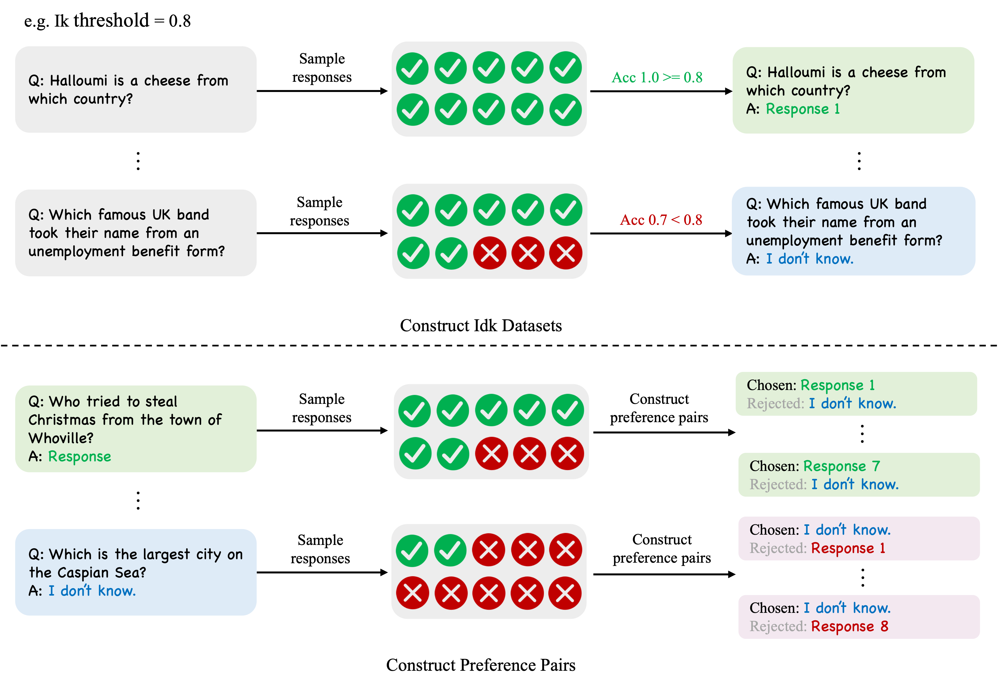
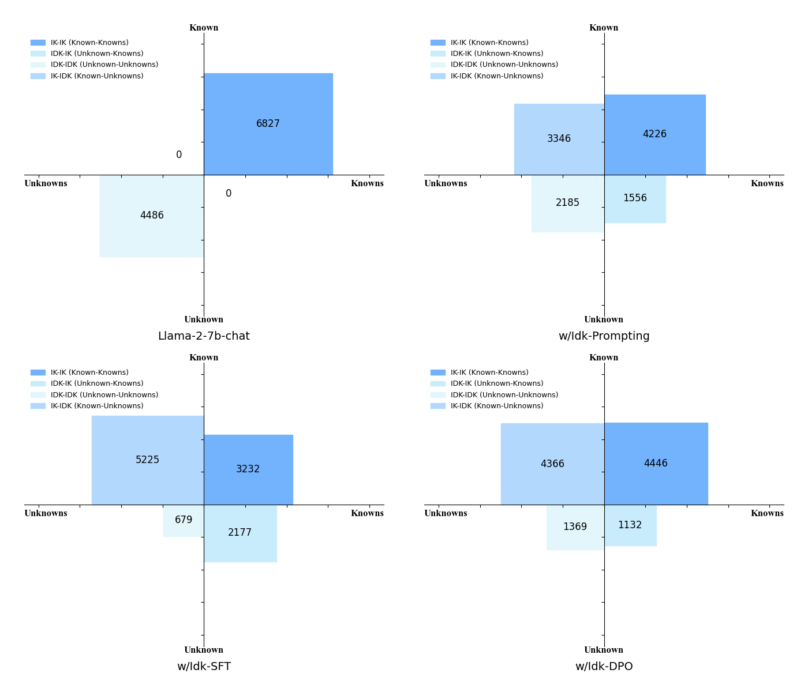
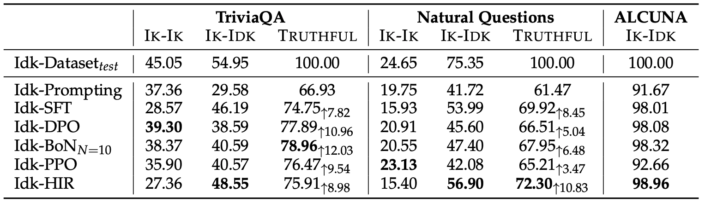

Introduction
Recently, AI assistants based on large language models (LLMs) have demonstrated impressive performance across a
variety of tasks, including casual conversation with users, solving mathematical problems, writing code, and
utilizing external tools.
Despite possessing a wide range of world knowledge, large language models are still highly susceptible to model
hallucinations, such as producing factual errors or imitative falsehoods.
The main findings of this blog are as follows:
- After aligning with the Idk dataset, AI assistants can significantly understand what they know and what they don't, and refuse to answer questions they don't know. For instance, Llama-2-7b-chat can explicitly determine whether it knows the answers to 78.96% of the questions in the test set at most. Additionally, the aligned AI assistant performs well on out-of-distribution test sets.
- Among various alignment methods, Supervised Fine-tuning can make the model overly cautious, leading to the incorrect rejection of questions it should know. Preference-aware Optimization can help mitigate this phenomenon by reducing the instances of erroneously refusing to answer known questions.
- The uncertainty threshold defined for known and unknown questions influences the behavior of AI assistants. The more questions are marked as "I don't know," the higher the likelihood of the AI assistant refusing to answer questions. However, overall, using a higher threshold results in an AI assistant that makes fewer mistakes and is generally more truthful.
- Models with a larger number of parameters are better at distinguishing what they know from what they do not know. For instance, after supervised fine-tuning, Llama-2-70b-chat can achieve a performance improvement of about 5.8% compared to Llama-2-7b-chat.
Knowledge Quadrants: Partitioning the Different Knowledges of AI Assistants

The understanding of AI assistants about their own knowledge can be divided through the knowledge quadrant
Idk dataset: Determining what exactly the AI assistant knows and doesn't know

To let the AI assistant know what it knows and doesn't know, we try using a model-specific "I don't know" (Idk)
dataset to align the AI assistant.
The Idk dataset contains questions that a specific AI assistant knows and does not know the answers to.
We build the Idk dataset based on a popular knowledge-intensive open-domain question answering dataset,
TriviaQA
As shown in the upper part of Figure 2, we randomly sample ten responses for each question and then determine whether these responses are correct, obtaining the accuracy for each question. For questions with an accuracy higher than the given Ik threshold, we consider that the model knows the answer to this question and randomly select one of the model's generated correct answers as the annotated reply. Otherwise, we consider that the model does not know the answer to this question and use a template for refusing to answer as the annotated reply, which we represent in the figure with "I don't know." The lower half of Figure 2 shows the method we used to construct preference data. To construct preference data, we will first use half of the Idk data for SFT training, and then use the model trained with SFT to collect responses on the other half of the Idk data to construct pairs of preferences. Each preference pair is composed of a question, a chosen response, and a rejected response. For each question, we sample ten responses on the SFT model. For questions where the model knows the answer, as shown in the light green box in the figure, we use all correct responses generated by all models as the chosen responses, and the refusal template as the rejected response. For questions where the model does not know the answer, as shown in the light blue box in the figure, we use all incorrect responses generated by the model as the rejected responses, and the refusal template as the chosen response. For simplicity, we set the Ik threshold to 1.0. That is, for a question, only when all ten responses from the model are correct, do we consider that the model knows the answer to this question. We will discuss the effects of different values of the Ik threshold on the behavior of the model later.
Alignment: Letting the AI assistant know what it knows and what it doesn't know
After acquiring the Idk dataset, we can attempt to teach the AI assistant to perceive its own knowledge boundaries
by alignment, so that it politely refuses to answer users' questions when it encounters knowledge it does not
know.
For the original AI assistant, such as a Llama-2-7b-chat model, we find that it does not exhibit obvious behaviors
of refusing to answer questions it does not know

As shown in Figure 3, directly instructing the model to refuse to answer questions it doesn't know through prompts is somewhat effective, but there are still a significant number of "IDK-IK" and "IDK-IDK" questions. After conducting SFT with the IDK dataset, the number of "IDK-IK" and "IK-IK" questions significantly decreased, indicating that the model's ability to perceive its own knowledge boundaries has been enhanced. However, we discover that SFT introduces an unexpected side effect, making the model more conservative, which leads to a reduction in the number of "IK-IK" questions. Yet, we further find that compared to SFT models, employing preference-aware optimization (such as DPO) can mitigate this phenomenon, encouraging the model to answer questions more frequently and reducing the instances of erroneously refusing to answer questions it knows.

In Figure 4, we present more detailed experimental results, including the
outcomes of various alignment algorithms such as SFT, DPO
The number of IK-IK and IK-IDK questions contained in the test set can be approximately seen as an upper limit. TRUTHFUL represents the sum of the proportions of IK-IK and IK-IDK, because both IK-IK and IK-IDK questions are types of truthful answers and do not generate additional false information. Therefore, TRUTHFUL can represent the model's truthfulness. Simply using an "Idk" prompt to make the model refuse to answer questions it doesn't know can be somewhat effective, but the model's TRUTHFUL rate remains only at 66.93%, with a significant number of IDK-IDK questions. Idk-SFT can increase the TRUTHFUL rate to 74.75%, but it will lead to a decrease in the IK-IK rate. This is a side effect of SFT, which can be considered a kind of "alignment tax." Further, we find that preference-aware optimization can encourage models to answer questions more frequently, thereby mitigating such side effects. Preference-aware optimization algorithms like DPO, PPO, and BoN can reduce the decline in IK-IK while maintaining a relatively high IK-IDK rate. Idk-BoN achieves the highest TRUTHFUL rate, and Idk-HIR can improve the IK-IDK ratio but offers less help in increasing the IK-IK ratio. However, Idk-HIR provides a method for switching the Ik threshold without the need to retrain the model. In summary, by aligning the AI assistant with the Idk dataset (which represents its knowledge boundaries), we can transform IDK-IK and IDK-IDK questions into IK-IK and IK-IDK questions. The AI assistant is able to clearly perceive whether it knows the answers to most questions in the test set, and its accuracy significantly improves compared to before alignment.
Although TriviaQA itself cannot improve test set performance by fine-tuning on the training set (as the training set does not introduce the knowledge needed for the test set), we still introduce two different datasets as Out-of-distribution (OOD) tests, and models trained on TriviaQA also demonstrate good generalization ability on OOD test sets. We construct the Idk dataset (which only includes the test set portion) based on the Natural Questions using the same method, with the Ik threshold also set at 1.0. The results on Natural Questions are similar to those on TriviaQA; compared to simply using prompts, the trained model achieved a higher TRUTHFUL rate. On the ALCUNA test set, where all answers must be rejected, the model is also able to refuse to answer most questions.
Ablation: Factors that affect the AI assistant's perception of its own knowledge boundaries

Effect of model size
The capabilities of large language models are generally related to their size in terms of parameters, with larger models often exhibiting stronger abilities. Therefore, to explore the impact of model size, we conduct Idk-SFT training on three different sizes of models: Llama-2-7b-chat, Llama-2-13b-chat, and Llama-2-70b-chat, to investigate how model size affects AI assistants' recognition of their own knowledge limitations. It is important to note that the label distribution of the Idk dataset varies across different models (the larger the model, the more IK-IK problems there are), which means that the IK-IK rate and the IK-IDK rate cannot be directly compared across models. Hence, our primary focus is on the TRUTHFUL rate of different models. The experimental results from Figure 5 indicate that the 13B model has a slightly higher TRUTHFUL rate than the 7B model. The TRUTHFUL rate of the 70B model is significantly higher than that of both the 13B and 7B models. This demonstrates that larger models are indeed better at distinguishing between what they know and what they don’t know.
Effect of data sources
Different pretrained models possess distinct knowledge due to their unique pretraining processes. During the training process, we construct model-specific Idk (I don't know) datasets for different pretrained models because we want the models to determine whether they know the answer to a question based on their internal knowledge, rather than learning to recognize questions with certain specific patterns. A model-specific Idk dataset can link the model's internal knowledge with the labels of the Idk dataset. To explore the impact of using non-model-specific Idk datasets on training, we construct two Idk datasets using Mistral-7B-Instruct-v0.1 and Baichuan2-7B-chat, named "Idk-Mistral" and "Idk-Baichuan," respectively. Experimental results from Figure 5 show that using non-model-specific Idk datasets, such as "Idk-Mistral" or "Idk-Baichuan," indeed leads to a decrease in the TRUTHFUL rate of the models. Since the Idk-Mistral and Idk-Baichuan datasets contain a large number of Idk questions, the trained models tend to reject answering questions more often, leading to a significant reduction in the number of IK-IK (I Know-I Know) questions, much lower than the proportion in the test set. This indicates that constructing model-specific Idk datasets is necessary to help models perceive what they know and what they do not.
Effect of Ik threshold

Here, we discuss the impact of different Ik thresholds on model behavior. Our primary focus is on the effects of the Ik threshold on Idk-SFT and conducting experiments with Llama-2-7b-chat. The most direct impact of the Ik threshold is on the distribution of labels in the Idk dataset, where a higher threshold indicates that more questions will be marked as "I don't know." As shown in the left graph of Figure 6, the higher the threshold, the larger the proportion of Idk questions. This is because, at a high Ik threshold, only those questions that the model is very confident about will be marked as known by the model. As shown in the right graph of Figure 6, increasing the Ik threshold results in a decrease in the IK-IK rate and an increase in the IK-IDK rate. With the increase of the Ik threshold, the model's TRUTHFUL rate will continue to rise. In other words, setting a higher Ik threshold helps the model better distinguish between what it knows and does not know, making the model overall more truthful. Conversely, setting a lower Ik threshold can make the model more helpful, as the number of IK-IK questions will increase. Additionally, we find that as the proportion of Idk questions in the dataset increases, the model tends to refuse to answer questions more frequently.

In Figure 7, we demonstrate the distribution of knowledge quadrants after performing Supervised Fine-Tuning (SFT) on Llama-2-7b-chat using the Idk dataset corresponding to different Ik threshold values. It can be observed that as the Ik threshold increases, the number of IK-IK issues decreases, the number of IK-IDK issues increases, and the overall TRUTHFUL rate rises.
Conclusion
In this work, we explore the question of "Can AI assistants know what they don't know?" We find that by aligning AI assistants, such as Llama-2-7b-chat, with a model-specific Idk ("I don't know") dataset that records what they know and don't know, AI assistants can largely identify the questions they do not know. In open-domain question-answering tests, Llama-2-7b-chat is able to accurately determine whether it knew the answer to 78.96% of the questions and refused to answer the questions it did not know. To achieve this, we explore various alignment strategies using the Idk dataset, including supervised fine-tuning and preference-aware optimization. Our analysis shows that the Ik threshold, which decides whether the model knows an answer to a certain question, affects the model's tendency to refuse to answer. Additionally, using a non-model-specific Idk dataset tends to lower performance. Employing models with a larger number of parameters, such as Llama-2-70b-chat, results in a higher TRUTHFUL rate. The ability of AI assistants to refuse to answer questions beyond their knowledge effectively reduces the model's factual errors and other hallucinations. We believe this is an important capability that a truthful AI assistant needs to have.